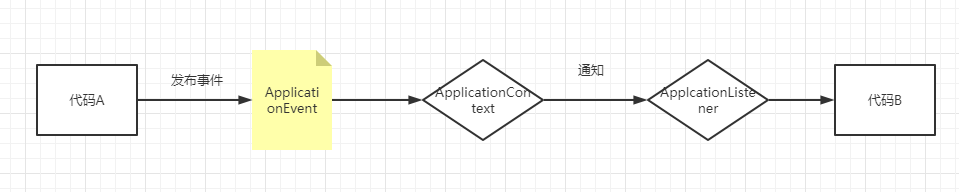
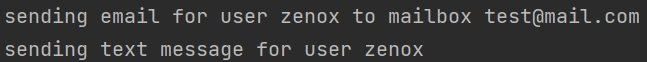

SpringApplicationEvent使用案例
前言
Spring提供了两个核心类ApplicationListener和ApplicationEvent，用以支持事务处理，每当一种ApplicationEvent发布到ApplicationContext中，一种对应的ApplicationListener就会被触发调用（如果确实定义了的话），这是典型的观察者设计模式的应用。
这里用一张图来简单概括一下Spring事件机制的作用。

若不使用事件机制，代码A是直接引用代码B的，两者存在一个强耦合，但如果引入Spring事件机制，则代码A发布事件给ApplicationContext，再由ApplicationContext去通知所有该事件的ApplicationListener，由它去调用代码B。
关于使用Spring的事件处理功能到底有啥好处，这里引用一个Stackoverflow上的回答，我觉得在一定程度上解答了这个问题。
One of the advantages to using Spring’s event publishing (observer pattern - http://en.wikipedia.org/wiki/Observer_pattern) is that the components are loosely coupled - there is no direct coupling between the publisher and the subscriber. Sure, they both have a dependency on the Spring Event API, but not on each other. This makes it possible to extend the application by adding/removing subscribers without affecting other subscribers (assuming that your subscribers don’t depend on each other).
如果你对原回答感兴趣，可以参考本文末的参考文章一栏。
定义事件
即ApplicationEvent，在实际使用中，我们都需要自己定义一个ApplicationEvent的子类，这里给出一个简单的例子，假设用户注册后，我们要给用户发送一封电子邮件。
1 |
|
我们定义一个RegisterEvent，继承自ApplicationEvent，父类默认就有一个构造方法，传入一个Object source，这个source是啥？来看看源码注释。
1 | /** |
这个source，实际上就是事件触发时所在的对象，所以一般来说，像下面这样构造就好了。
1 | new RegisterEvent(this, username, email); |
Spring生命周期内置事件
Spring框架中，ApplicationContext的生命周期也会伴随着一些它自带的事件触发。
| Event | Explanation |
|---|---|
ContextRefreshedEvent |
ApplicationContext初始化、刷新时会触发该事件，即ApplicationContext的refresh()方法被调用时 |
| `ContextStartedEvent | 通过start()方法启动ApplicationContext时会触发该事件，比如先通过stop()方法停止了ApplicationContext，再通过start()方法启动，就能触发这个事件 |
ContextStoppedEvent |
通过stop()方法停止ApplicationContext时会触发该事件，停止后，可以通过start()方法来重新启动ApplicationContext |
ContextClosedEvent |
通过close()方法关闭ApplicationContext时会触发该事件，或者通过JVM关闭钩子，也可以触发该事件，被关闭后，ApplicationContext就不可能再被刷新或者启动了 |
RequestHandledEvent |
当一个http请求被处理后，会触发这个事件，只有web应用下才会触发这个事件，即通过DispatcherServlet处理请求的应用 |
ServletRequestHandledEvent |
RequestHandleEvent的子类，多了一些Servlet请求的信息 |
触发事件
使用ApplicationEventPublisher发布事件
我们可以通过ApplicationEventPublisher的publishEvent方法来发布一个事件，一般来说，我们可以再需要发布事件的类上实现ApplicationEventPublisherAware接口，如此一来就有一个setApplicationEventPublisher方法，可以让我们将ApplicationEventPublisher，然后将这个类注册为Spring的bean即可。
转换为代码，假设现在我们需要在RegisterService内发布RegisterEvent事件，那只需要让RegisterService实现ApplicationEventPublisherAware接口，然后将RegisterService注册为bean（@Service、@Component等）即可。
1 |
|
使用ApplicationContext发布事件
虽然我们可以通过上面的方式注入一个ApplicationEventPublisher来发布事件，但其实还有一种更方便、高效的方式，我们来看看ApplicationContext的接口定义。
1 | public interface ApplicationContext extends EnvironmentCapable, ListableBeanFactory, HierarchicalBeanFactory, |
可以看到ApplicationContext自身就实现了ApplicationEventPublisher，也就是说，ApplicationContext自身就可以用来发布事件。
改造一下上面的RegisterService，得到下面的代码。
1 |
|
监听事件
实现ApplicationListener接口
定义一个ApplicationListener接口的实现类，并注册为bean，即可监听对应的事件。比如下面的例子。
1 |
|
注册多个ApplicationListener
针对一种ApplicationEvent，可以定义多个不同的ApplicationListener，针对上面这个例子，假设还需要为用户发送一条短信，那么可以再定义一个MobileRegisterEventListener。
1 |
|
如此一来，就有两个ApplicationListener用于监听RegisterEvent了。写一个单元测试，来发布一个事件。
1 |
|
查看结果如下，可见发布一个事件，被两个对应的ApplicationListener监听到了。

事务特性
以上所讲的ApplicationListener监听到了事件后，实际上都是同步执行的，也就是说当publishEvent方法被调用后，会一直阻塞到所有ApplicationListener都执行完成，所以，这种同步执行的方式，其对事务的支持也是和普通方法一样的，如果监听到事件并准备执行时，当前是在一个事务中的，那么会加入到当前事务中。
至于如何定义异步的监听器，请看后续小节。
基于注解的事务监听
除了直接实现ApplicationListener接口，我们还可以使用注解来定义ApplicationListener，这种方式更加简单、灵活。
直接将上面两个例子中的ApplicationListener整合到一起，并使用注解方式实现。
1 |
|
可以看到，只需要用@EventListener来标注一下方法，方法参数需要给定为对应的事件类型，如此一来，当对应的事件被发布时，该方法就会被同步执行。
监听多事件
使用注解监听事件，还可以指定一个方法监听多个不同的事件。只需要在EventListener注解上添加多个事件的class即可。
1 |
|
但需要注意的是，注册了多事件的方法，一定不能有参数。
链式事件
如果你希望当前事件处理完后，立刻触发另一个事件，新触发的事件可以被直接监听并处理，Spring也支持。
1 |
|
将方法返回值设为一个事件即可，在方法的最后，返回一个新的事件。
如果你想要触发多个事件，那么可以返回一个Collection或者数组。
异步事件
如上面所述，ApplicationListener默认是同步处理事件的，即publishEvent方法会一直阻塞，直到ApplicationListener执行完成。
如果想要让它异步执行，只需要在方法上加上@Async即可。
1 |
|
但是异步事件处理有两点限制。
- 异步方法抛出异常时，该异常并不能被publishEvent捕获，具体可以参照@Async注解的异常处理。
- 异步事件不能像上述的同步方法一样，通过返回一个ApplicationEvent来链式触发事件，而必须得注入一个ApplicationEventPublisher来发布事件。
Listener排序
使用Order注解，即可对监听同一事件的Listener排序。
1 |
|
参考文章
What are the advantages of using Spring application event publishing?